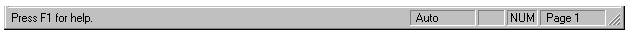

View > Status Bar |

The Status Bar is found just below the horizontal scrollbar at the bottom of the main worksheet window.
When you are editing an equation, the message line gives you tips on what to do next.
When the mouse hovers over a toolbar button, the message line displays a description of the button.
The box at the far right displays the page of the worksheet.
"Auto" means the worksheet is in automatic mode.
"Calc F9" means the worksheet is in manual mode and you should press the [F9] key to calculate and see results.